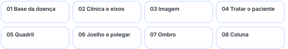
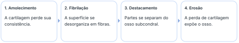
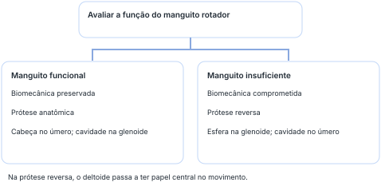
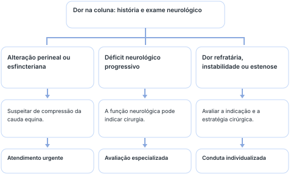

Da perda de cartilagem à decisão de tratar: quadril, joelho, polegar, ombro e coluna.
Da cartilagem à conduta: a decisão depende da articulação, da dor e da função.

Em palavras simples. O revestimento que ajuda a articulação a deslizar e distribuir a carga vai se deteriorando. Com o tempo, outras estruturas também se alteram, e o movimento pode ficar doloroso e limitado.
A artrose, também chamada osteoartrite ou osteoartrose, é uma doença degenerativa e progressiva. O foco inicial do raciocínio é a cartilagem articular; as alterações ósseas aparecem como parte das consequências do processo. É a doença articular crônica mais comum e pode reduzir a qualidade de vida, a amplitude dos movimentos e a capacidade funcional, sobretudo no idoso com pouca reserva muscular.
Não confundir artrose com perda de densidade mineral óssea. A densitometria óssea não é o exame usado para investigar a artrose.
A osteoartrite é hoje compreendida como uma doença de toda a articulação, incluindo cartilagem, osso subcondral e sinóvia. A obesidade é um fator de risco estabelecido, especialmente para a artrose do joelho. Isso não muda o foco didático da aula na perda de cartilagem.
A cartilagem normal é aneural e avascular. A dor decorre das consequências de sua lesão e do comprometimento das estruturas vizinhas. Sua matriz extracelular contém muita água, fibras colágenas e proteoglicanos, incluindo sulfato de condroitina. Elasticidade e compressibilidade permitem distribuir a carga; o ambiente articular também participa da nutrição e das trocas metabólicas.
Na articulação, cartilagem, osso subcondral, líquido e membrana sinoviais interagem. Água, ácido hialurônico, oxigênio, nutrientes e enzimas fazem parte do ambiente articular descrito. A agressão pode ser traumática, inflamatória, imune ou idiopática. Os condrócitos tentam reparar a matriz, mas a síntese e a degradação entram em desequilíbrio, com proliferação desorganizada, morte celular e perpetuação da lesão.
A progressão envolve inflamação, exposição e remodelamento do osso subcondral, esclerose, cistos e formação de osteófitos. O osteófito é o crescimento ósseo conhecido como “bico de papagaio”; integra uma tentativa de adaptação e redistribuição de carga, sem restaurar a cartilagem normal.

As metaloproteinases são enzimas que degradam proteínas colágenas e não colágenas da matriz. A interleucina-1 foi destacada como citocina inflamatória, e fatores de crescimento, como o fator de crescimento transformador beta e o fator de crescimento semelhante à insulina 1, participam da tentativa de reparo. Esse detalhamento molecular foi explicitamente dispensado para a prova da disciplina.
Em palavras simples. A queixa típica aparece ao usar a articulação: andar ou apoiar o peso provoca dor. Além de ouvir o paciente, observe como ele entra, anda e movimenta o membro.
Nos membros inferiores, a dor costuma depender da carga: “pisa e dói”. O uso durante o dia pode deixar o paciente mais dolorido no fim do dia ou à noite. A rigidez matinal tem menor destaque do que nas artropatias inflamatórias, nas quais a dor em repouso também merece atenção. A intensidade da dor e a limitação funcional precisam ser avaliadas individualmente.
O nome da deformidade depende do segmento e de seu alinhamento. No joelho, o varo corresponde às pernas em “alicate”; no valgo, os joelhos se aproximam. No quadril, a comparação é feita com o ângulo entre o colo e a diáfise do fêmur.
Ângulo do colo femoral com a diáfise.
Não decorar apenas a aparência do joelho e aplicar a mesma imagem ao quadril. Compare o eixo e o ângulo com o padrão normal daquela articulação.
Na nomenclatura geral, o desvio em varo ou valgo pode ser descrito pela orientação do segmento distal em relação ao proximal. Evite transformar a ideia de “afastar da linha média” em uma regra única para todo osso ou articulação.
“Quando estiverem lá no posto de saúde, no consultório de vocês, levanta da cadeira, vai lá e chama você o paciente. Isso aí já entrega muita coisa sem nem perguntar.”
Em palavras simples. A radiografia mostra indiretamente a perda de cartilagem e a reação do osso. Fazer a imagem com o paciente apoiando o peso pode revelar um desgaste que parece menor quando ele está deitado.
Na investigação discutida em aula, a radiografia é o exame inicial e complementa a avaliação clínica. Para joelho e bacia, prefira, quando possível, radiografias com carga, em pé. O apoio aproxima as superfícies e evidencia melhor o estreitamento do espaço articular. Uma imagem sem carga pode subestimar a alteração.
Na avaliação do quadril, pedir incidências de frente e de perfil. A insistência em duas incidências foi um dos recados práticos da aula.
A esclerose pode ser entendida pela Lei de Wolff: o osso adapta sua estrutura às cargas a que é submetido. Se a cartilagem amortece menos, o osso abaixo dela precisa lidar com uma transmissão de carga maior.
Os sinais estão no osso e no espaço articular, mas o processo não deve ser confundido com uma doença primária da densidade do osso.
Uma artrose avançada e evidente na radiografia não exige automaticamente ressonância. O exame adicional deve responder a uma pergunta clínica ou cirúrgica. A incidência de Rosenberg, com o joelho parcialmente flexionado, foi apenas citada como curiosidade, sem prioridade de estudo para esta prova.
A indicação de radiografia depende do contexto clínico; a recomendação enfática da aula se refere ao raciocínio ortopédico apresentado. Não significa solicitar imagem indiscriminadamente para qualquer dor musculoesquelética.
Em palavras simples. O objetivo é aliviar a dor e permitir que a pessoa use melhor a articulação. Comece pelas medidas conservadoras e ajuste o plano conforme a resposta, as expectativas e a limitação no dia a dia.
A gravidade da imagem não é diretamente proporcional à intensidade dos sintomas. Uma artrose radiograficamente importante pode ser tolerável com analgesia simples; uma alteração menor pode acompanhar dor intensa. A indicação cirúrgica depende da repercussão clínica, e não de uma imagem isolada.
“Você não vai tratar o raio-X, você vai tratar o paciente.”
As possibilidades mencionadas incluem corticoide, ácido hialurônico e medicação analgésica em aplicação local. Dexametasona e lidocaína apareceram como exemplos na discussão. A infiltração é uma alternativa selecionada, não uma aplicação mensal automática nem uma etapa obrigatória para todos.
Glicosamina, condroitina e colágeno foram citados como suplementos ou condroprotetores. O benefício da suplementação oral foi descrito como controverso, com custo mensal exemplificado em R$ 150 a R$ 200. Também foram mencionados plasma rico em plaquetas e aspirado de medula óssea. Não foi estabelecido um esquema de dose, frequência ou duração para essas opções.
Essas opções não têm eficácia equivalente nem garantia de regenerar a cartilagem. Suplementos podem ter contraindicações e interações; não se deve assumir que “na pior das hipóteses não funcionam”. Infiltrações exigem indicação, técnica e avaliação de riscos. A lista de exemplos não constitui uma prescrição.
“Não dá para prometer nem condenar, tem que cuidar com o que você fala, com o que você promete.”
A anquilose não é um destino inevitável de toda artrose. O termo também pode descrever rigidez por união fibrosa ou óssea; a distinção central aqui é entre a fusão operatória e a não operatória.
Em palavras simples. No quadril, o desgaste pode causar dor, dificuldade para girar a perna e alteração da marcha. É preciso distinguir o que vem da própria articulação de problemas da coluna ou das estruturas ao redor.
A coxartrose associa deterioração da cartilagem, neoformação óssea, dor, restrição de movimento, incapacidade funcional e claudicação. A perda de rotação interna é uma pista de exame físico; a repercussão dos sintomas orienta a necessidade de tratamento.
O panorama epidemiológico apresentado incluiu acometimento de 5 a 10% da população mundial, maior frequência em mulheres acima dos 55 anos e menor frequência em asiáticos. Foi também mencionada a necessidade de cirurgia em cerca de metade dos casos do panorama discutido. Essas estimativas devem ser entendidas dentro da população considerada, sem prever a evolução de um paciente individual.
Os percentuais de displasia, epifisiólise e doença de Perthes não devem ser somados ou aplicados a toda a população: o denominador e a população de referência precisam ser conhecidos. São números do panorama de causas secundárias apresentado.
A radiografia de frente e perfil é a base. A ressonância magnética pode ajudar na suspeita de osteonecrose e em situações selecionadas de tumor; a tomografia auxilia a investigação óssea e o planejamento. A história e o exame devem explicar os achados.
Idade e imagem, sozinhas, não decidem a cirurgia. O ponto destacado foi a dor incapacitante e o limite funcional que o paciente já não consegue tolerar.
Os tipos de prótese e os acessos são repertório para residência e formação futura. A prioridade da disciplina permanece nos quatro sinais radiográficos e nos conceitos clínicos centrais.
Em palavras simples. No joelho, o alinhamento, os meniscos e os ligamentos ajudam a explicar os sintomas. No polegar, a localização na base do dedo é a pista para reconhecer a rizartrose.
A artrose do joelho é multifatorial. Predisposição genética e deformidades prévias se somam à participação dos meniscos, que ajudam a distribuir e amortecer a carga. A degeneração ligamentar pode acrescentar frouxidão e instabilidade.
São frequentes dor mecânica à marcha, limitação funcional, claudicação e deformidade em varo ou valgo. A instabilidade pode produzir episódios de “flambagem”: o joelho parece falhar ou desviar bruscamente durante o apoio.
O compartimento medial recebe aproximadamente 60% da carga, segundo o número apresentado. É o local de maior desgaste habitual, e a deformidade mais comum da gonartrose é o varo. A alteração do eixo também modifica a distribuição da carga e participa da progressão.
Reveja os quatro sinais clássicos: estreitamento, esclerose subcondral, cistos e osteófitos. Observe também alteração do eixo e corpos livres intra-articulares. Fragmentos de cartilagem podem se desprender, calcificar e causar irritação ou sensação de algo solto dentro da articulação.
A base conservadora é a mesma do quadril: educação, expectativas realistas, fortalecimento, fisioterapia e atividade de menor impacto, com medicação e medidas locais conforme o caso. Se o plano controla a dor e preserva função, ele pode ser mantido.
Na doença restrita a um compartimento, com o outro preservado, pode ser considerada a prótese unicompartimental. Essa alternativa preserva estruturas e estoque ósseo. A cirurgia atual já leva em conta uma possível revisão em 15 a 20 anos, além de disponibilidade de material, enxerto e custo. Esse intervalo é uma perspectiva de planejamento, não um prazo obrigatório de falha da prótese.
Os acessos pela linha média e subvasto foram citados para guardar, sem prioridade de estudo agora. O subvasto passa sob a musculatura do vasto e pode ser mais trabalhoso ou limitar algumas etapas da cirurgia. Os tipos de prótese foram lembrados como assunto de residência.
É a artrose da primeira articulação carpometacarpiana, na base do polegar, envolvendo o trapézio. Foi apresentada como a forma mais comum de artrose da mão, com estimativa de 10% na população com idade mais avançada e maior ocorrência em asiáticos que em caucasianos.
A escolha cirúrgica para a rizartrose depende de idade, demanda, estabilidade e articulações envolvidas. A artrodese foi destacada na aula; isso não a torna a operação mais frequente ou preferida em todos os contextos. A trapeziectomia, com suas variações, é uma alternativa amplamente utilizada.
Na rizartrose, o encaminhamento ao cirurgião pode ser considerado quando o controle clínico da dor falha. O efeito sobre a pinça precisa entrar na escolha do procedimento. A discussão deve considerar que a rigidez cirúrgica pode limitar movimentos úteis da mão.
Em palavras simples. Os tendões do manguito ajudam a manter a cabeça do úmero funcionando no lugar certo. Se eles deixam de cumprir essa função, a mecânica muda, e a escolha da prótese também pode mudar.
O processo degenerativo pode ser primário ou secundário a trauma, inflamação e alteração do manguito rotador. Na artropatia do manguito, a lesão crônica modifica a sustentação e a biomecânica do ombro, favorecendo degeneração e instabilidade. A aula relacionou diferenças de frequência entre países aos esportes de arremesso e ao uso dos membros superiores.

Na prótese anatômica, o componente umeral mantém a forma de cabeça e o componente glenoidal mantém a forma de cavidade. Na reversa, a esfera fica na glenoide e a cavidade no úmero; a mudança permite que o deltoide tenha papel central no movimento quando o manguito não funciona adequadamente.
A importância da ressonância no ombro não é apenas confirmar desgaste. Ela investiga o manguito, cuja função modifica a decisão terapêutica.
A artroscopia é uma cirurgia realizada por vídeo. A lista de técnicas é repertório; o ponto enfatizado para avaliação foi a relação entre o manguito e a escolha da prótese.
Em palavras simples. Na coluna, a dor pode vir de várias estruturas. O ponto que muda a urgência é saber se existe compressão de nervos, principalmente quando aparecem alterações da sensibilidade do períneo ou do controle urinário e intestinal.
Discos, facetas articulares, ossos e ligamentos participam da degeneração. Dor facetária, doença discal, hérnia de disco, trauma e fratura também entram no raciocínio. O aprofundamento das patologias da coluna ficou previsto para outra aula.
Esses níveis têm grande mobilidade, o que ajuda a explicar sua maior exposição a alterações degenerativas e hérnias. Na avaliação, o exame neurológico ganha prioridade: a radiografia isolada não explica toda queixa nem exclui compressão radicular.
Dor cervical com formigamento no braço ou dor lombar com queimação irradiada para a perna sugerem comprometimento de raízes nervosas. A interpretação depende do exame: localização, sensibilidade, força e evolução do quadro orientam a investigação.

Anestesia em sela, na região do períneo, associada a perda ou alteração do controle esfincteriano exige suspeitar de compressão das raízes da cauda equina. Acione o atendimento de urgência e o encaminhamento especializado. Não conduza como uma lombalgia comum.
Anestesia em sela e alterações urinárias ou intestinais exigem ação imediata. Acione o Serviço de Atendimento Móvel de Urgência para obter o suporte adequado.
Em toda avaliação de lombalgia, investigue sintomas perineais e esfincterianos. O prontuário deve documentar o que o paciente informou e o que foi efetivamente examinado. A evolução posterior pode mudar o quadro e precisa ser considerada na orientação.
Não copie automaticamente “nega anestesia em sela” ou “nega descontrole esfincteriano”. Registre a negativa apenas após investigar o sintoma. A suspeita de cauda equina não depende de esperar que todos os sinais apareçam juntos.
Déficit neurológico progressivo, dor refratária, instabilidade e estenose podem indicar cirurgia. Conforme o caso, descomprime-se, retiram-se estruturas compressivas e estabiliza-se por artrodese. A indicação não depende apenas da dor.
Página de véspera · siga a trilha e recupere as decisões principais.
01 · Conceito. Artrose: foco na cartilagem; densitometria não é o exame de investigação.
02 · Eixos. Joelho varo em alicate; valgo em “X”. Quadril: referência de 125 a 130°, menor no varo e maior no valgo.
02 · Exame. No quadril, rotação interna se perde primeiro; a externa vem depois. Trendelenburg: queda pélvica contralateral ao apoio insuficiente.
03 · Imagem. Radiografia inicial; com carga quando possível; frente e perfil no quadril.
03 · Quatro sinais. Estreitamento do espaço articular, esclerose subcondral, cistos subcondrais e osteófitos.
04 · Conduta. Tratamento conservador primeiro. A imagem não mede sozinha a dor; cirurgia depende de limitação e resposta ao cuidado.
04 · Termos. Artrodese: fusão cirúrgica. Anquilose: fusão ou rigidez não produzida como artrodese.
05 e 06 · Carga. Quadril: decisão guiada pela repercussão clínica. Joelho: cerca de 60% da carga medial e varo mais frequente.
06 · Polegar. Rizartrose fica na primeira carpometacarpiana, na base do polegar.
07 · Ombro. Manguito funcional favorece prótese anatômica; insuficiente pode exigir reversa, com participação central do deltoide.
08 · Urgência. Anestesia em sela e alteração esfincteriana: suspeitar de cauda equina e agir com urgência. Déficit progressivo também pesa na cirurgia.
Outros números: rara antes dos 35 anos; forma primária mais comum nas mulheres após 55 anos; quadril com estimativa de 5 a 10%; rizartrose com 10% na população mais velha. Não confundir estimativas de grupos com indicação individual de cirurgia.
Ao final da aula, foi anunciada uma revisão da prova em grupos aleatórios e uma possibilidade de recuperar pontuação. Não foi definida aqui uma regra completa de valor ou composição dos grupos.